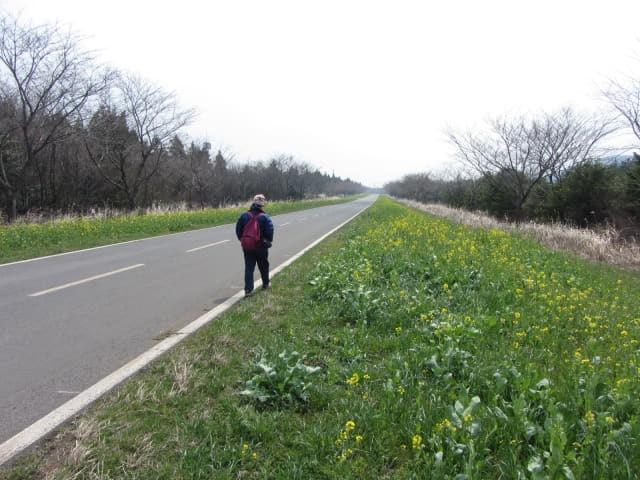

在加時里風力發電廠看到漂亮的油菜花田, 總算補償了風景沉悶、了無春天生氣的鹿山路, 心情也輕鬆了少許。繼續沿鹿山路走, 濟州馬體驗公園就在加時里風力發電廠隔鄰, 便順道在外面巡巡。
濟州馬體驗公園 (조랑말박물관 Jeju Horse Park)
濟州馬體驗公園入口前的巨型馬雕像和奔跑中的馬匹。
草坪上還有一些有趣的雕像。
濟州馬體驗公園的得意標誌。
終於看到鹿山路黃澄澄油菜花漂亮馬路景色
一直沿鹿山路向前走, 從這裡開始, 馬路兩旁大部份的油菜花都已開了, 雖然櫻花樹仍然是光禿禿的, 但已教我們十分高漲, 總算看到黃澄澄油菜花的鹿山路。
濟州馬體驗公園的面積很大, 佔地約5,000平方米, 這裡仍然是公園的範圍。
圓形的建築物是濟州馬體驗公園內的馬匹博物館。
離開濟州馬體驗公園的範圍, 繼續沿鹿山路一直走。馬路兩旁的油菜花, 一路伴隨我們。
筆直的鹿山路, 看不到盡頭的。沿途都沒有碰到半個旅客, 其實整條鹿山路只有我們兩個傻瓜在走路。
有趣的山麓, 半邊像給切去的。
走呀! 走呀! 離鹿山路南面的出口究竟還有多遠?

風景真是很美。當馬路兩旁櫻花怒放之時, 不難想像是一幅何等美絕的圖畫! 無奈今年濟州天嚴重反常, 令本來編排周密的鹿山路遠足計劃, 最後有白走一趟的感覺! 遺憾! 遺憾!